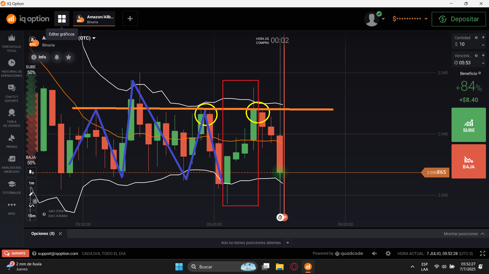
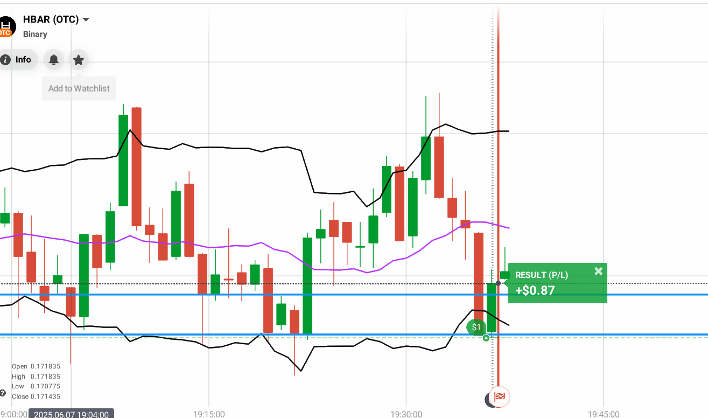
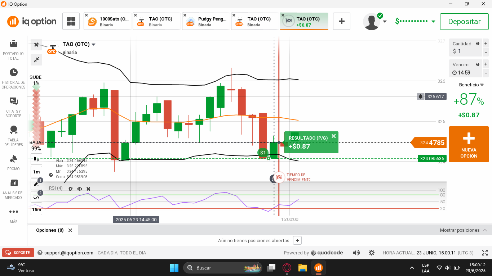

Un sistema claro, directo y sin relleno para que operes con precisión, seguridad y consistencia desde el día uno.
Acá no vas a encontrar teoría innecesaria ni ruido del mercado. Este curso está diseñado para darte exactamente lo que necesitás para operar: dos sistemas probados, paso a paso, con ejemplos reales.
Te voy a guiar desde la configuración de tu gráfico hasta la ejecución de entradas con criterio profesional. Cada módulo construye sobre el anterior y te acerca a tomar decisiones inteligentes y consistentes en el mercado.
La clave está en la simplicidad y la disciplina. Menos información, más acción precisa. Hacemos un detox de información para que aprendas solo lo esencial y lo apliques con confianza.
2
Sistemas
6
Módulos
1 min
Temporalidad
Filosofía: La simplicidad es poder. Aprendé lo justo, aplicá con precisión y dejá que los resultados hablen por sí mismos.
Introducción al Trading
¿Qué es el Trading y las Opciones Binarias?
Trading
El trading es una profesión financiera que consiste en comprar y vender
activos —como acciones, divisas, criptomonedas o materias primas— con el objetivo de obtener un retorno
sobre la inversión aprovechando las fluctuaciones de sus precios.
Muchas veces se puede operar sin poseer directamente el activo, apostando a que su valor
suba o baje. Por ejemplo: si invertís a que el precio caerá y efectivamente baja, obtenés una
ganancia sobre lo invertido.
Este curso está diseñado para enseñarte un sistema simple y práctico,
accesible incluso para quienes no tienen experiencia previa.
Opciones Binarias
Las opciones binarias permiten invertir de manera sencilla y directa.
Solo existen dos posibles resultados: que el precio suba (CALL) o que baje (PUT)
en un período de tiempo determinado.
Si tu predicción es incorrecta, perdes el 100% de lo invertido en esa operación (pero no tu saldo total).
Si acertas, la ganancia suele rondar el 85% del capital invertido.
Con un sistema claro y disciplina, esta herramienta puede ser utilizada de forma segura y consistente.
¿Cómo funciona?
Esperar las confirmaciones necesarias antes de operar.
Decidir si el precio subira (CALL) o bajara (PUT).
Definir monto y tiempo de la operación, gestionando el riesgo.
Si se cumple el análisis, se obtiene ganancia; si no, solo se pierde lo invertido en esa operación.
El broker actua como intermediario, conectando a compradores y vendedores.
Cada operación tiene dos lados: cuando alguien gana, otro pierde, y la plataforma paga en consecuencia.
¿Es suerte?
No. Con un método probado, la clave está en practicar en cuenta demo hasta dominar el sistema
antes de arriesgar dinero real.
Cómo preparar tu gráfico para operar con precisión
Configurar el gráfico de forma correcta es el primer paso para aplicar cualquier estrategia de trading con éxito.
Una pantalla limpia y clara te permitirá leer el mercado con confianza y tomar mejores decisiones.
Navegación en la plataforma de trading
Antes de añadir indicadores, aseguráte de dominar lo básico:
Gráficos: muestran el movimiento de precios en tiempo real.
Bandas de Bollinger: detectan zonas de expansión y contracción.
Niveles institucionales: áreas clave donde los grandes inversores actúan.
Configuración completa del gráfico
Optimiza tu gráfico paso a paso para lecturas precisas:
Cambiar a velas japonesas
El gráfico predeterminado suele ser línea. Para un análisis real, pasa a velas japonesas:
Muestran apertura y cierre de cada vela.
Reflejan maximos y minimos exactos.
Revelan la fuerza real del mercado.
Clic en tipo de gráfico.
Selecciona Velas Japonesas.
Confirma el cambio.
Botón de tipo de gráficoSelección de velas japonesasVelas japonesas aplicadas
Ajustar temporalidad
Configura el gráfico en 1 minuto (1m) para capturar micro-movimientos sin ruido.
Temporalidad en 1 minuto
Añadir Bandas de Bollinger
Estas bandas permiten detectar acumulacion, expansion y zonas de reversion:
Abri el menu de Indicadores.
Selecciona Popular.
Elegi Bollinger Bands.
Ajusta colores:
Bandas externas en blanco.
EMA central llamativa (ejemplo: naranja).
Confirmar la vista de trabajo
Velas japonesas en 1m.
Bandas externas claras y visibles.
EMA central destacada.
Vista final lista para operar
Vista final del gráfico
Velas japonesas en 1m
Bandas de Bollinger
Niveles institucionales (en gris)
Resistencias: techos donde el precio retrocede.
Soportes: pisos donde el precio rebota.
Niveles macro: fuertes y dificiles de superar.
Niveles micro: debiles y temporales.
Sistema #1 — Flexzone | Trading en Rango con Precisión
¿Qué es la Flexzone?
La Flexzone es una estrategia de trading basada en acción del precio para mercados
laterales sin tendencia clara. Utiliza BB y
EMA para detectar acumulación y agotamiento,
entrando en el punto exacto de reversión.
Es ideal para opciones binarias con expiración de 1 minuto, enfocada en
reversiones inmediatas y no en tendencias largas.
Confirmaciones
Mientras más confirmaciones utilices, más efectivo será el sistema.
Mercado lateral definido.
Velas grandes y consistentes.
Estructura clara y coherente.
Bandas de Bollinger horizontales.
Inicio de la vela en la banda.
Varios quiebres en la zona media (EMA).
Recorrido de banda a banda.
Última vela grande con cierre limpio.
Que no supere resistencia institucional fuerte.
Rango definido por soporte y resistencia institucional.
No usar indicadores extra (solo BB, EMA y acción del precio).
Se puede operar con 1 o 2 confirmaciones menos, pero el sistema pierde efectividad.
Lo ideal es operar con TODAS a tu favor para realmente sacarle la plata al mercado.
Tipos de Flexzone
Flexzone Superior — Venta

Estructura clara con BB horizontales.
Velas grandes con varios quiebres en la EMA.
Rebotes anteriores con volumen alto.
Última vela grande con mecha superior — dominio vendedor.
Señal clara para entrar en venta.
Flexzone Inferior — Compra


Mercado lateral con BB horizontales.
Varias velas grandes y quiebres en la EMA.
Dominio comprador en zona de soporte institucional.
Ultima vela roja de agotamiento — presion de reversion alcista.
Señal clara para entrar en compra.
Paso a Paso para Operar con Flexzone
Confirmar BB horizontales.
Verificar mercado lateral sin tendencias.
Identificar 3-4 velas en la misma dirección.
Esperar vela grande con mecha larga en la banda.
Entrar en la siguiente vela: put en superior, call en inferior.
Cuándo NO Operar
Operar sin condiciones válidas = pérdidas. Evita estos errores:
Bandas abiertas o inclinadas
Indica tendencia; Flexzone NO funciona en este contexto.
Velas de otro color intermedio
Una vela opuesta invalida la secuencia. Los Dojis sí son aceptables.
Sin vela de agotamiento
La señal es inválida sin vela de agotamiento clara. Paciencia: no se fuerza.
Frase Clave
"La vela de agotamiento no se fuerza. Se espera."
Entra solo si todas las condiciones se cumplen.
Próximamente: Video Demostrativo
Pronto tendrás un video con casos reales, entradas en vivo y explicación paso a paso. El enlace estará disponible aquí.
Sistema #2 — Relleno de Zona | Trading en Rango con Precisión
Concepto Estratégico
La estrategia Relleno de Zona se utiliza en rangos laterales.
Su objetivo es detectar velas que se forman dentro del rango y generan un
latigazo rápido hacia fuera, sin ruptura estructural definitiva.
Este movimiento abrupto suele ser una trampa institucional.
La operación correcta se realiza en contra del latigazo, buscando el retorno
al centro del rango.
Confirmaciones Clave
Cuántas más confirmaciones se cumplan, mayor será la efectividad del sistema:
Mercado lateral claramente definido (sin alta volatilidad).
Velas amplias y dominantes con intención clara.
Estructura sólida con máximos y mínimos bien marcados.
Bandas de Bollinger horizontales y estables.
Rango delimitado por soportes y resistencias institucionales.
Señal en la primera vela de la tendencia.
Vela amplia y dominante dentro del rango.
Sin picos de volatilidad excesiva.
Latigazo rápido entre los segundos 40 y 34.
Precio no rellena después del latigazo.
Operar solo con acción del precio + Bollinger + estructura.
Se puede operar con alguna confirmación menos, pero el sistema pierde efectividad.
Lo ideal es entrar cuando TODAS las condiciones se cumplen.
Cómo Identificar el Relleno de Zona
La vela se forma dentro del rango sin intención inicial de ruptura.
Entre segundos 40 y 34 aparece un latigazo rápido fuera del rango.
El cuerpo de la vela permanece dentro del canal.
La mecha dominante corresponde al latigazo.
La señal es válida si la vela se mantiene así hasta el cierre.
Plus: Soporte o resistencia institucional a favor.
Ejemplo gráfico: operaciones válidas de compra y venta.
Tipos de Relleno
Relleno Superior — Venta (PUT)
Vela inicia dentro del rango con movimiento bajista suave.
Latigazo fuerte hacia arriba sin cierre fuera del rango.
Mecha superior dominante y cuerpo dentro del rango.
Señal: entrar en venta (PUT) en la siguiente vela.
Indica agotamiento del impulso alcista y alta probabilidad de retroceso bajista inmediato.
Relleno Inferior — Compra (CALL)
Vela alcista que se forma dentro del rango.
Latigazo fuerte hacia abajo con mecha inferior dominante.
Cuerpo permanece dentro del canal sin ruptura.
Señal: entrar en compra (CALL) en la siguiente vela.
Señal de agotamiento bajista y mayor probabilidad de rebote alcista.
Confirmaciones Extra
Mecha del latigazo clara y dominante.
Cuerpo nunca rompe la Banda de Bollinger.
Señal cerca de nivel institucional (numero redondo).
Se mantiene sin volver al centro antes de cerrar.
No Operar Si...
La vela se encuentra en la EMA central.
El spike rellena el rango antes de cerrar.
No hay consolidación real (bandas inclinadas o tendencia marcada).
No ocurre spike en tiempo preciso (40s-34s).
Mecha o cuerpo poco dominantes.
Consejos Avanzados
El spike suele ser una trampa para traders novatos.
Esperar siempre la señal completa: entrada, spike y cierre válido.
La paciencia es la clave para filtrar falsas entradas.
Frase del Entrenador
"El relleno de zona no es ruptura fallida, es falsa intención."
Aprendé a identificar velas trampa y operarás con ventaja.
Resumen Rápido
Bandas de Bollinger horizontales.
Vela se forma dentro del rango.
Spike fuerte entre 40s y 34s.
Cuerpo dentro del rango con mecha dominante.
No rellena antes de cierre.
Señal cerca de número redondo institucional.
Próximamente: Video Demostrativo
Pronto tendrás un video con casos reales, entradas en vivo y explicación paso a paso. El enlace estará disponible aquí.
Consejos Adicionales
Errores que no hay que hacer
No uses tarjetas ni cuentas de otra persona: Siempre paga con tus datos. Si usas cuentas ajenas, podes tener problemas para comprobar pagos.
No subas capturas editadas o cortadas: Las pruebas tienen que ser claras y completas. Si las modificas, te pueden rechazar o desconfiar.
Tener plata en la cuenta para pagar: No intentes pagar si no tenes saldo. Eso puede traer problemas y perder oportunidades.
Consejos de Coaching
Usá tus propios métodos y comprobá que funcionan: No copies sin entender. Así tenés más control y confianza.
Mantené tus datos siempre reales y guardá todo respaldo: Esto te ayuda si necesitás hacer reclamos o probar algo.
Ser honesto y ordenado te va a llevar lejos, en el trading y en la vida.
Glosario de Términos de Trading
Trading
Comprar y vender activos financieros, como acciones o divisas, para ganar dinero con sus cambios de precio.
Opciones Binarias
Un tipo de inversion donde se predice si el precio de un activo subira o bajara en un tiempo determinado, con dos resultados posibles: ganar o perder.
Gestion de Riesgos
Formas y técnicas para evitar grandes pérdidas cuando operas con opciones binarias.
Volatilidad
Cuánto y que tan rápido cambia el precio de un activo en un tiempo específico.
Broker
Empresa o plataforma que te permite comprar y vender opciones binarias en el mercado.
Leverage (Apalancamiento)
Usar dinero prestado para aumentar el tamano de tu inversion y potencialmente ganar mas.
Margin (Margen)
Dinero que necesitas tener en tu cuenta para usar apalancamiento y abrir operaciónes.
Spread
La diferencia entre el precio para comprar y el precio para vender un activo.
FOMO (Miedo a Perderse Algo)
Cuando sentis miedo de no aprovechar una oportunidad y tomas decisiones rápidas sin pensar.
Martingala
Estrategia donde se aumenta la inversion después de una perdida para intentar recuperar el dinero.
Call Option (Opcion de Compra)
Una apuesta a que el precio de un activo subira en un tiempo determinado.
Put Option (Opcion de Venta)
Una apuesta a que el precio de un activo bajara en un tiempo determinado.
Expiration Time (Tiempo de Expiracion)
El tiempo que dura una operación, después del cual se sabe si ganaste o perdiste.
In the Money (En el Dinero)
Cuando tu predicción fue correcta y ganaste la operación.
Out of the Money (Fuera del Dinero)
Cuando tu predicción fue incorrecta y perdiste la operación.
Risk/Reward Ratio (Relación Riesgo/Recompensa)
Comparación entre cuánto arriesgas y cuánto podés ganar en una operación.
Market Sentiment (Sentimiento del Mercado)
La opinión general de los inversores sobre un activo o mercado que afecta los precios.
Trade (Operación)
Comprar o vender una opción binaria, intentando ganar según cómo se mueva el precio.
Order (Orden)
Instrucción para comprar o vender en un precio específico o al precio del mercado.
Market Order (Orden de Mercado)
Comprar o vender al mejor precio disponible en ese momento.
Limit Order (Orden Límite)
Comprar o vender solo si el precio llega a un valor que vos elegiste.
Stop Loss (Orden de Detención)
Una orden para detener una operación y limitar las pérdidas si el precio baja demasiado.
Take Profit (Toma de Ganancias)
Una orden para cerrar una operación y asegurar las ganancias cuando el precio llega a un nivel deseado.
Expiry (Expiración)
Momento en que termina la operación y se decide si ganaste o perdiste.
Demo Account (Cuenta Demo)
Una cuenta para practicar operaciones sin usar dinero real, con fondos ficticios.
Signal (Señal)
Una recomendación o aviso sobre cuándo comprar o vender una opción binaria.
Broker de Opciones Binarias
Plataforma que te permite operar con opciones binarias y manejar tus operaciones.
Módulo Final — Disciplina Operativa
Protocolo de Operación Diaria
Un sistema de trading no son solo las estrategias. Es cómo te comportás antes, durante y después de cada operación.
Esto es lo que separa a los traders consistentes del 95% que pierde dinero.
1. Establecé tu Objetivo Mensual y Operativo
Antes de abrir cualquier gráfico, necesítas saber para qué estás operando hoy.
Sin un objetivo claro, cada operación se convierte en una apuesta emocional.
La matemática que te da claridad
Ejemplo con capital inicial de $300:
Período
Objetivo
Cálculo
Mensual
$450
150% del capital
Semanal
$112
$450 ÷ 4 semanas
Diario
$15–$20
$450 ÷ 22 días hábiles
Cuando tu objetivo diario es $15, ya no sentís presión desmedida en cada operación.
Eso elimina el miedo y la avaricia que destruyen a la mayoría.
Regla: Cuando alcanzás tu objetivo diario, cerrá la plataforma. No existe razón válida para seguir operando.
2. Modelo de Sesiones en Bloques
No te sentes frente al gráfico durante horas. El trading de precisión funciona en bloques cortos y enfocados.
La concentración se agota; operar cansado es operar mal.
⏰
Duración por bloque
15 a 20 minutos de análisis activo
📈
Máx. operaciones
2 a 3 entradas por sesión. No más.
🚫
Sin "compensar"
Si perdes, no busques recuperarlo en el mismo bloque
Entre bloques, descanso mínimo de 10 minutos. Levantáte, tomá agua, salí del monitor.
El mercado siempre va a estar. Tu capital, si lo quemás con impaciencia, no.
3. Gestión de Riesgo Ultra Clara
La gestión del capital no es opcional. Es la diferencia entre un trader que dura meses y uno que dura semanas.
Máximo 5% del saldo por operación. Con $300, son $15 por entrada. Con $500, son $25.
Sin martingala. Doblar la apuesta para recuperar pérdidas es la forma más rápida de quemar una cuenta.
Si perdés, no aumentés el monto. La próxima entrada usa el mismo porcentaje de siempre.
El 5% protege tu cuenta. Incluso con 5 pérdidas seguidas, conservás más del 77% de tu capital.
Trampa común: Pensar que porque "esta vez estoy seguro" podés arriesgar más.
El mercado no sabe lo que pensás. Las reglas existen para los momentos en que estás convencido, no solo cuando tens dudas.
4. Regla Psicológica Post-Trade
Después de cada operación —ganés o pierdas— hacéte estas 5 preguntas antes de abrir la próxima:
¿Esperaste todas las confirmaciones del sistema? Si la respuesta es no, la pérdida fue por impaciencia, no por el mercado.
¿Entraste por impulso o por sistema? Una entrada por impulso, aunque gane, es un error de proceso.
¿El contexto de mercado era favorable? El sistema no funciona en cualquier condición. ¿El mercado estaba en tendencia o en rango?
¿Respetás el monto máximo de riesgo? Si arriesgaste más del 5%, el error fue tuyo independientemente del resultado.
¿Qué aprendiste de esta operación? Si la respuesta es "nada", no estás prestando atención. Cada trade es información.
Llevá estas preguntas anotadas. No en la cabeza: escritas.
El autoengäño es el mayor enemigo del trader.
5. La Matemática que Elimina el Miedo
El miedo al operar casi siempre viene de no tener claro lo que se está jugando.
Cuando los números son pequeños y claros, la emoción baja y la precisión sube.
Ejemplo real:
Capital: $300
Riesgo por operación: $15 (5%)
Objetivo diario: $15–$20
Si ganás 1 operación con 85% de retorno: +$12,75
Con 2 operaciones ganadoras: +$25,50 → objetivo cubierto
No necesítas ganar todas. Necesítas ganar más de las que perdes, con un sistema consistente.
Eso es lo que te da el promedio mensual positivo.
6. Aviso Honesto: Promedio, No Garantía
Importante: El objetivo mensual es un promedio estadístico, no una promesa diaria.
Hay días que ganás el doble. Hay días que perdes. El resultado se mide al final del mes.
Un trader profesional no se preocupa por el resultado de una sola operación. Se preocupa por ejecutar bien su sistema de forma consistente.
Si ejecutás bien durante 30 días, los números se acomodan solos.
7. Regla del Corte Emocional
Esta es la regla más importante del protocolo. Y la que más se rompe.
1 Pérdida
Detente. Sal del gráfico.
Esperá 10 minutos mínimo. Respirá. Luego evaluá si volvés con cabeza fría.
2 Pérdidas
Fin del día. Sin excepciones.
Cerrá la plataforma. El mercado sigue mañana. Tu capital no se recupera solo.
La tercera operación después de dos pérdidas casi nunca gana.
No porque el mercado lo sepa, sino porque vos ya no estás en el estado mental correcto para operar bien.
La regla no tiene excepciones. "Pero esta vez el setup es perfecto" no es válido. Nada es válido para romperla.
8. La Filosofía: No Evaluamos Resultados. Evaluamos Ejecución.
Este es el cambio de paradigma que lo transforma todo:
“Una operación puede perder y ser un buen trade. Una operación puede ganar y ser un pésimo trade.
Lo que importa es si respetás el sistema.”
Cuando evaluás por ejecución y no por resultado:
Una pérdida bien ejecutada no te afecta emocionalmente. Fue parte del sistema.
Una ganancia por impulso te preocupa, porque sabés que no fue reproducible.
Tu mentór o tu yo futuro puede revisar cada entrada objetivamente.
Tu confianza no depende del resultado del día, sino de cúanto respetás el proceso.
Con el tiempo, los resultados positivos son la consecuencia natural de ejecutar bien.
No al revés.
Tu ventaja competitiva no es la estrategia. Es el comportamiento.
Cualquiera puede copiar un sistema. Pocos pueden mantener la disciplina para ejecutarlo correctamente día tras día.
Eso es lo que te va a diferenciar.